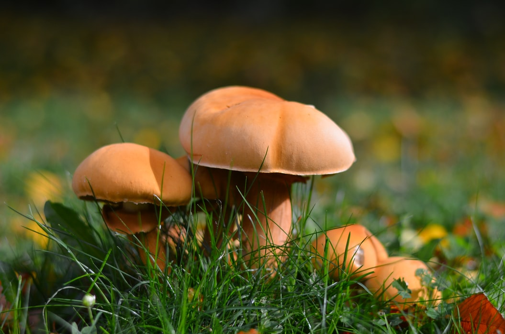

생물적 요인
비생물적 요인
생태계에 존재하는 모든 생물을 말한다.
역할에 따라 생산자, 소비자, 분해자로 구분하고,
생산자는 유기물을 생산, 소비자는 유기물을 소비, 분해자는 유기물을 분해한다.
생산자

빛에너지를 이용하여 무기물로부터 유기물을 합성하는 독립 영양 생물로, 식물, 식물성 플랑크톤 등이 있다.
소비자

생산자나 다른 동물을 먹이로 하는 생물로 1차 ∙ 2차 ∙ 3차 소비자 등으로 구분하며, 초식 동물, 육식 동물 등이 있다.
분해자
생물의 사체나 배설물에 포함된 유기물을 무기물로 분해하는 생물로, 곰팡이, 세균, 버섯 등이 있다.
생물을 둘러싸고 있는 환경 요인으로, 빛, 온도, 물, 공기, 토양 등이 있다.